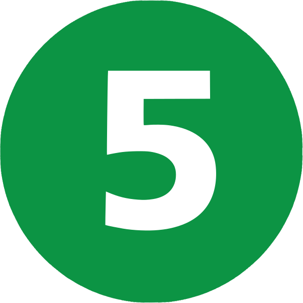
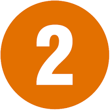
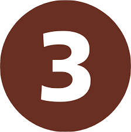
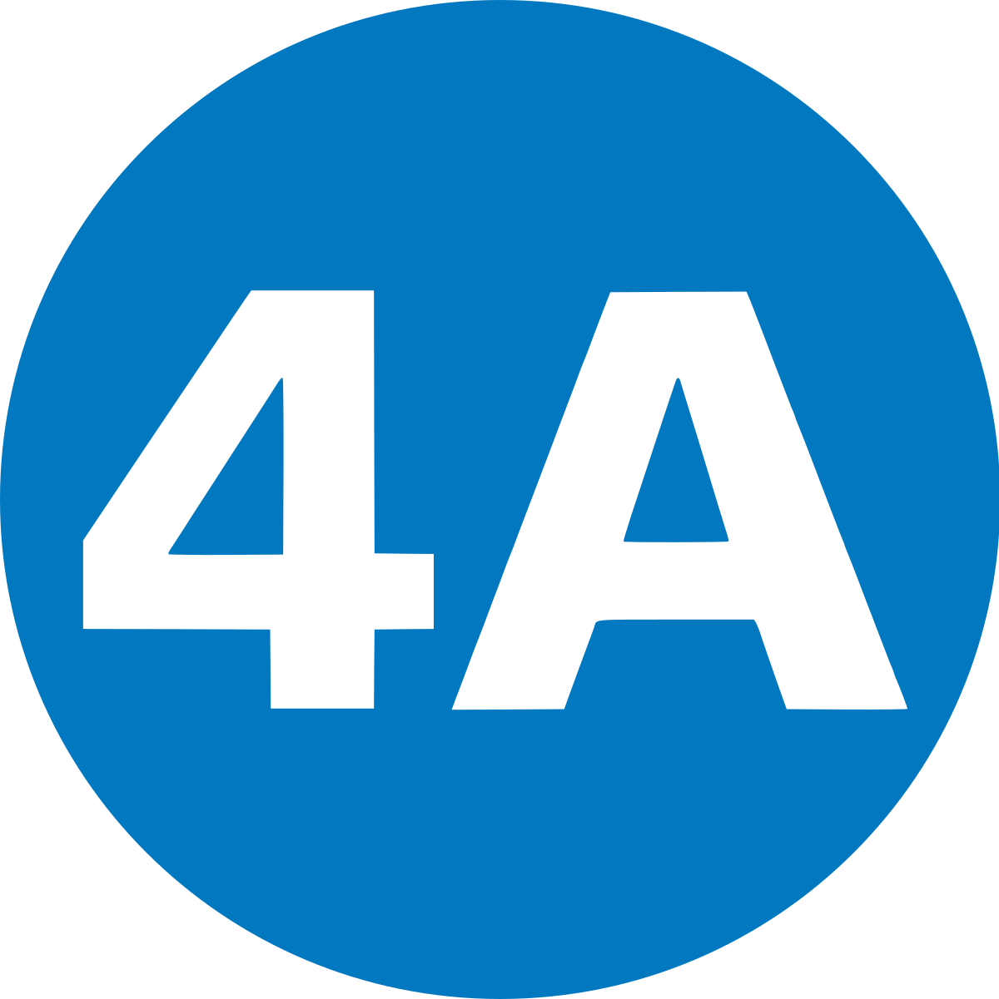

⚪ Estado de la red
- Estación operativa
- Estación cerrada temporalmente
- Estación con accesos cerrados
- San Pablo 
- Neptuno
- Pajaritos
- Las Rejas
- Ecuador
- San Alberto Hurtado
- Universidad de Santiago
- Estación Central
- U.L.A.
- República
- Los Héroes 
- La Moneda
- Universidad de Chile 
- Santa Lucía
- Universidad Católica
- Baquedano
- Salvador
- Manuel Montt
- Pedro de Valdivia
- Los Leones
- Tobalaba
- El Golf
- Alcántara
- Escuela Militar
- Manquehue
- Hernando de Magallanes
- Los Dominicos
- Vespucio Norte
- Zapadores
- Dorsal
- Einstein
- Cementerios
- Cerro Blanco
- Patronato
- Puente Cal y Canto
- Santa Ana
- Los Héroes
- Toesca
- Parque O'Higgins
- Rondizzoni
- Franklin
- El Llano
- San Miguel
- Lo Vial
- Departamental
- Ciudad del Niño
- Lo Ovalle
- El Parrón
- La Cisterna 
- El Bosque
- Observatorio
- Copa Lo Martínez
- Hospital El Pino
- Plaza Quilicura
- Lo Cruzat
- Ferrocarril
- Los Libertadores
- Cardenal Caro
- Vivaceta
- Conchalí
- Plaza Chacabuco
- Hospitales
- Puente Cal y Canto
- Plaza de Armas
- Universidad de Chile
- Parque Almagro
- Matta
- Irarrazabal
- Monseñor Eyzaguirre
- Nuñoa
- Chile España
- Villa Frei
- Plaza Egaña
- Fernando Castillo Velasco
- Tobalaba
- Cristóbal Colón
- Francisco Bilbao
- Príncipe de Gales
- Simón Bolivar
- Plaza Egaña
- Los Orientales
- Grecia
- Los Presidentes
- Quilin
- Las Torres
- Macul
- Vicuña Mackenna
- Vicente Valdes
- Rojas Magallanes
- Trinidad
- San José de la Estrella
- Los Quillayes
- Elisa Correa
- Hospital Sótero del Río
- Protectora de la Infancia
- Las Mercedes
- Plaza de Puente Alto
- Vicuña Mackenna
- Santa Julia
- La Granja
- Santa Rosa
- San Ramón
- La Cisterna
- Plaza de Maipú
- Santiago Bueras
- Del Sol
- Monte Tabor
- Las Parcelas
- Laguna Sur
- Barrancas
- Pudahuel
- San Pablo
- Lo Prado
- Blanqueado
- Gruta de Lourdes
- Quinta Normal
- Cumming
- Sanata Ana
- Plaza de Armas
- Bellas Artes
- Baquedano
- Parque Bustamante
- Santa Isabel
- Irarrazabal
- Ñuble
- Rodrigo de Araya
- Carlos Valdovinos
- Camino Agrícola
- San Joaquín
- Pedrero
- Mirador
- Bellavista de La Florida
- Vicente Valdes
- Cerrillos
- Lo Valledor
- Pdte. Pedro Aguirre Cerda
- Franklin
- Bío Bío
- Ñuble
- Estadio Nacional
- Nuñoa
- Inés de Suárez
- Los Leones